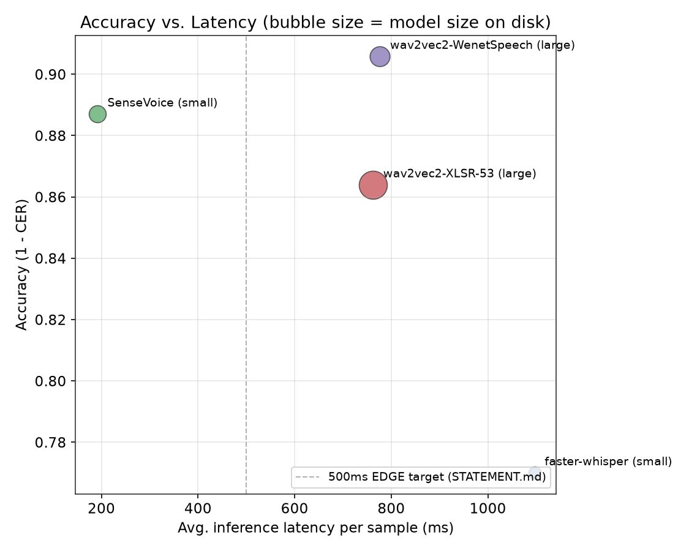
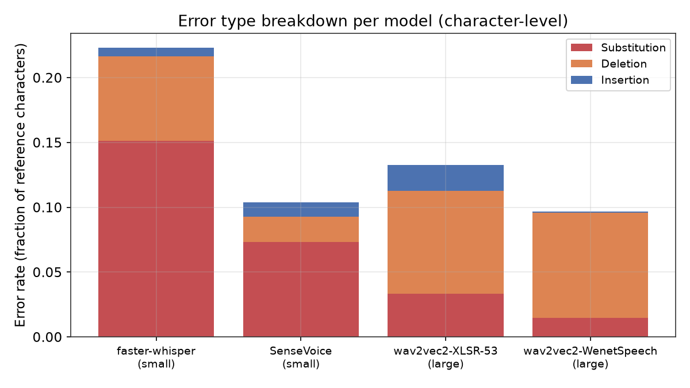
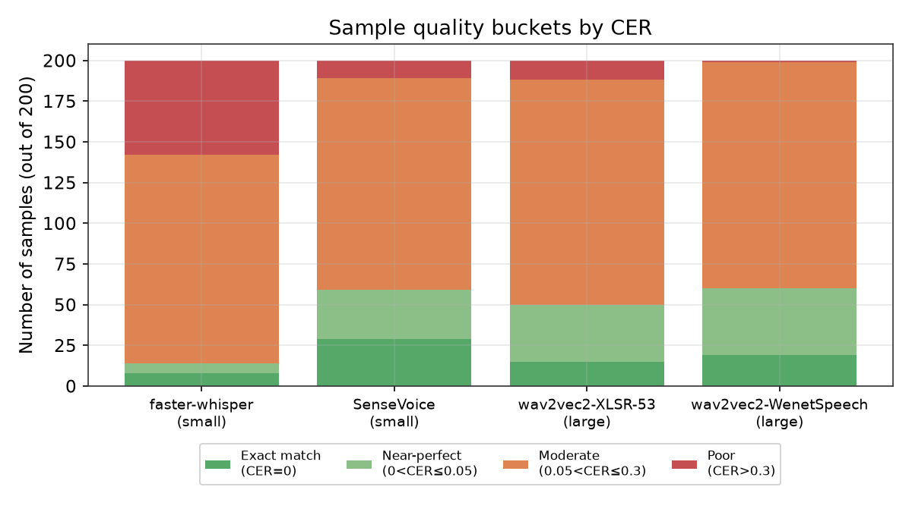

The Chinese Dictation app needs to move beyond studio-quality audio (podcasts, slow narration) toward real-world natural speech: YouTube and bilibili videos, natural speakers, background noise. It must also run on EDGE devices, CPU-only, with no cloud dependency.
| Model | Architecture | Checkpoint | Size |
|---|---|---|---|
| faster-whisper-small | Whisper (CTranslate2, int8) | Systran/faster-whisper-small | 464 MB |
| SenseVoice-small | SenseVoice (FunASR) | iic/SenseVoiceSmall | 896 MB |
| wav2vec2-XLSR-53 | Wav2Vec2-CTC (multilingual pretrain) | jonatasgrosman/wav2vec2-large-xlsr-53-zh-cn | 2434 MB |
| wav2vec2-WenetSpeech | Wav2Vec2-CTC (WenetSpeech pretrain) | wbbbbb/wav2vec2-large-chinese-zh-cn | 1224 MB |
CER (primary), WER (jieba segmentation), tone accuracy (pypinyin), latency/RTF, model size, peak RAM
Traditional-to-Simplified conversion (OpenCC) applied to every model before scoring, since Whisper outputs Traditional characters by default
Friedman test, Wilcoxon signed-rank (Bonferroni correction), and bootstrap 95% CI on paired 200-sample data
| Model | WER | CER | Tone Acc | Latency | RTF | Size | Peak RAM |
|---|---|---|---|---|---|---|---|
| SenseVoice-small | 0.209 | 0.113 | 0.985 | 191 ms | 0.033 | 896 MB | 3356 MB |
| wav2vec2-WenetSpeech | 0.176 | 0.094 | 0.996 | 776 ms | 0.128 | 1224 MB | 2375 MB |
| wav2vec2-XLSR-53 | 0.235 | 0.136 | 0.995 | 762 ms | 0.126 | 2434 MB | 2298 MB |
| faster-whisper-small | 0.382 | 0.230 | 0.958 | 1096 ms | 0.201 | 464 MB | 1139 MB |
All four models process faster than real time (RTF below 1.0). Only faster-whisper meets the 500MB size target, but it also has the lowest accuracy of the four.
Friedman test (CER, 4 models, n=200): chi-square = 233.66, p < 0.000001. There is a statistically significant overall difference among the models.
| Pairwise comparison (Wilcoxon) | p-value | Conclusion (Bonferroni α ≈ 0.0083) |
|---|---|---|
| faster-whisper vs. the other three | < 0.000001 | Significant: faster-whisper is worse |
| wav2vec2-XLSR-53 vs. wav2vec2-WenetSpeech | < 0.000001 | Significant: WenetSpeech is better |
| SenseVoice vs. wav2vec2-XLSR-53 | 0.0473 | Not significant after correction |
| SenseVoice vs. wav2vec2-WenetSpeech | 0.0553 | Not significant after correction |



| Ground truth | Predicted | Count | |
|---|---|---|---|
| 第 | → | 蒂 | 2 |
| 关 | → | 官 | 2 |
| 英 | → | 因 | 1 |
| 禹 | → | 渔 | 1 |
| 滋 | → | 思 | 1 |
Most confusion pairs are homophones or near-homophones (guan/guan, ying/yin). This is a typical ASR error pattern, not random noise.
SenseVoice is by far the fastest but uses the most RAM (3.3GB). wav2vec2-WenetSpeech has the best accuracy but is about 4x slower. faster-whisper is smallest but least reliable, with high variance and many outliers.
This is read speech recorded from Wikipedia sentences, closer to clean conditions than the spontaneous natural speech this project ultimately targets. Current CER numbers are likely a best-case lower bound.
For large gaps, such as faster-whisper against the rest, yes. For small gaps, such as SenseVoice against the wav2vec2 models, there is not yet enough statistical power to separate them clearly.
The under-500MB target is stricter than what current high-quality checkpoints allow. Consider tiered budgets by device class, mobile vs. desktop/laptop EDGE, instead of one fixed threshold.
Statistically worse on every metric than the other three models, with no advantage large enough to offset it.
Best CER and tone accuracy, substitution rate of only 1.5%, RTF of 0.128 still comfortably real time.
Fastest by far (RTF 0.033), accuracy not significantly worse. Peak RAM (3.3GB) should be monitored on target hardware.